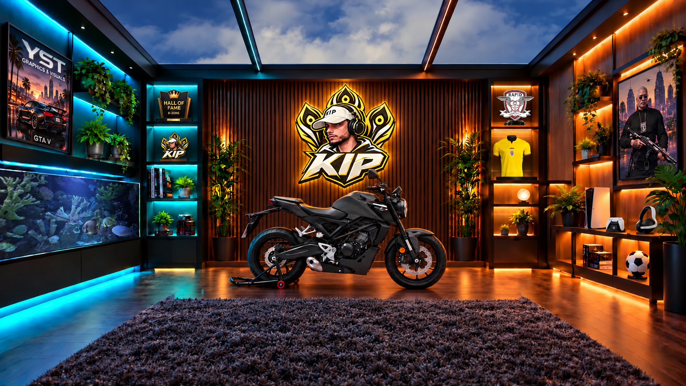
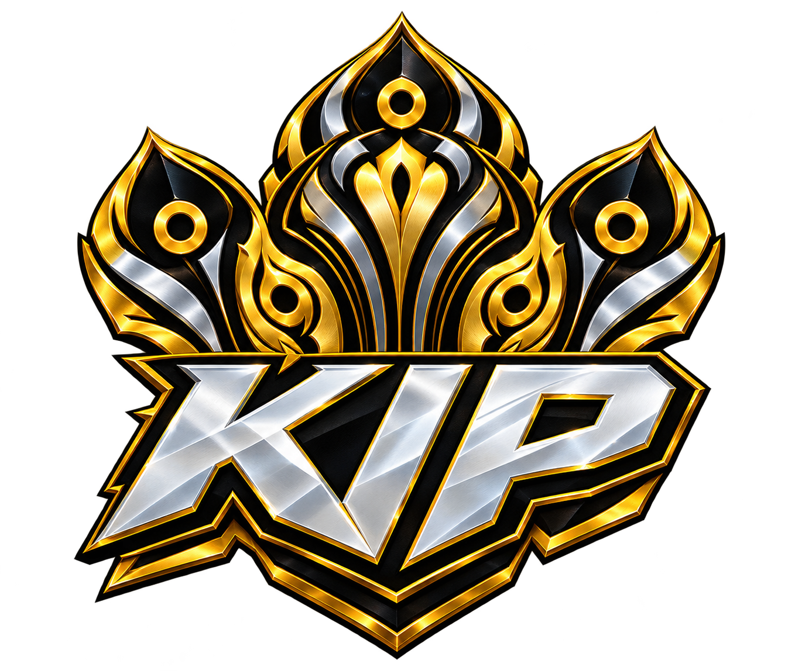

KICK
KICK  TIKTOK
TIKTOK  YOUTUBE
YOUTUBE 
THE KIP EXPERIENCE / 01LIVE-UL E MAI BUN
LIVE-UL E MAI BUN
CU TINE ÎN CHAT.
Momente spontane, gaming și reacții. Intră și fă parte din atmosferă.
INTRĂ PE KICK ↗GAMING / LIVE / COMUNITATE
Gaming cu personalitate. Live-uri cu energie.
O comunitate care face parte din joc.

01 / UNIVERSUL MEU
De la roleplay la provocările din live.
Aici ne strângem, ne jucăm și facem spectacol împreună.

Momente spontane, gaming și reacții. Intră și fă parte din atmosferă.
INTRĂ PE KICK ↗Un follow, un mesaj sau o donație.
Mulțumesc pentru fiecare susținere.
GTA V, FiveM și ture la volan.
Ne vedem în următoarea sesiune.
02 / GĂSEȘTE-ȚI LOCUL
03 / ÎN SPATELE LIVE-ULUI
Echipamentul cu care intru în fiecare sesiune.
04 / DINCOLO DE GAMEPLAY
KIP Overlay Studio. Un loc pentru overlayuri personalizate și un stream care arată ca tine.
EXPLOREAZĂ OVERLAY STUDIO ↗ REVOLUT ↗
REVOLUT ↗ INSTAGRAM ↗
INSTAGRAM ↗ PLAYLIST-UL KIP ↗
PLAYLIST-UL KIP ↗